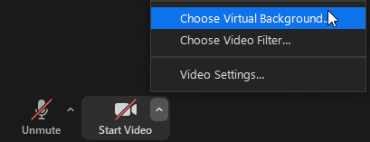
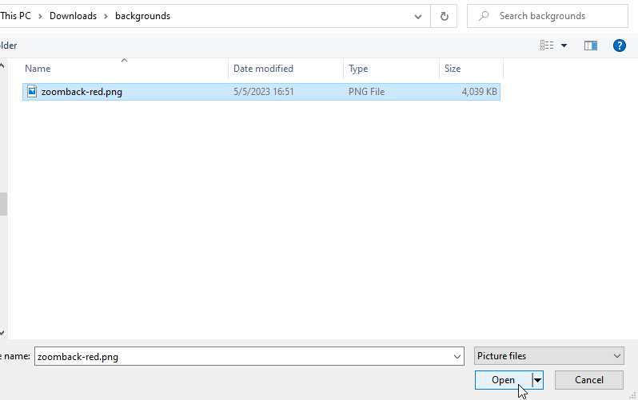
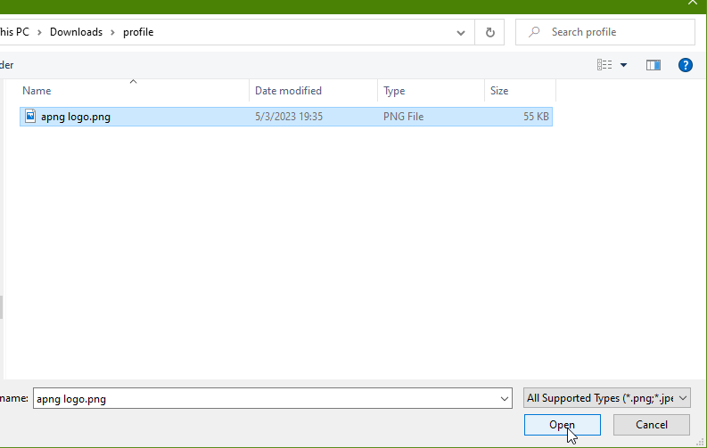
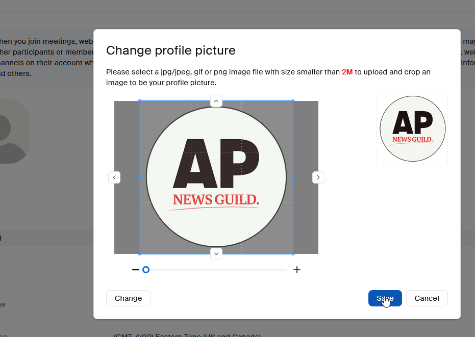

NMG Zoom banner instructions
Table of Contents
1 Setting a video background
Get the background image here. (Save the image somewhere on your machine)
{kind=link}
1.1 With Zoom open, open the "Backgrounds & Filters" settings panel:

Figure 1: Select "Choose Virtual Background…"

Figure 2: Click the "+" to add a custom image
1.2 From the "Backgrounds & Filters" settings panel, add the image:
Figure 3: Select "Add Image" from the dropdown

Figure 4: Navigate to where the video background file is saved
Note: It will appear reversed! This is because Zoom reverses your own view of your camera's feed to make it behave more like a mirror. It will be the correct orientation for everyone else.
2 Setting a default profile picture
Get the profile picture here. (Save the image somewhere on your machine)
{kind=link}
2.1 Go to your AP Zoom profile https://ap.zoom.us/profile
You will need to log in using your AP SSO account.
2.2 Change your profile picture:
Figure 5: Click the profile picture icon
Figure 6: Click "Choose Files" in the popup

Figure 7: Navigate to where the profile picture is saved

Figure 8: Click "Save", no changes are needed